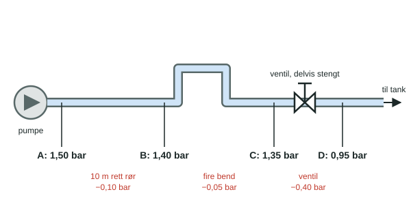

Trykktap
Når væske strømmer gjennom rør, bend og ventiler, faller trykket litt etter litt. Det kalles trykktap. Pumpen må lage nok trykk til å dekke tapet, ellers kommer ikke væsken fram. Her lærer du hva som gir trykktap, hvordan du leser det av trykkmålere, og hvordan du kan måle det selv i pumperommet.
Hvorfor faller trykket?
Væsken gnir mot rørveggen, og lagene i væsken gnir mot hverandre. Denne friksjonen bremser strømmen. Pumpen har gitt væsken energi i form av trykk, og friksjonen gjør litt av denne energien om til varme. Derfor er trykket lavere langt ute i røret enn rett etter pumpen. Tapet av trykk kalles trykktap.
Energien forsvinner ikke, men den blir til varme som du ikke kan bruke til å flytte væsken. Varmen er så liten at du sjelden merker den på temperaturen.

Les trykktapet av trykkmålere
Trykktapet over en del av røret er forskjellen mellom trykket før og trykket etter:
\[ \Delta p = p_{\text{før}} - p_{\text{etter}} \]
Forskjellen mellom to trykk kalles differansetrykk. Ligger røret vannrett og har samme diameter hele veien, er differansetrykket lik trykktapet over den delen av røret.
Oppgave: Bruk figuren. Hvor stort er trykktapet over ventilen? Hvor stort er det i hele røret fra A til D?
- Over ventilen (fra C til D): \( \Delta p = 1{,}35 \text{ bar} - 0{,}95 \text{ bar} = 0{,}40 \text{ bar} \)
- Hele røret (fra A til D): \( \Delta p = 1{,}50 \text{ bar} - 0{,}95 \text{ bar} = 0{,}55 \text{ bar} \)
Svar: 0,40 bar over ventilen og 0,55 bar i hele røret. Ventilen står for mer enn to tredeler av tapet.
Hva gir stort trykktap?
| Hvis … | blir trykktapet … |
|---|---|
| røret er lengre | større. Dobbelt så langt rør gir omtrent dobbelt så stort tap. |
| hastigheten er høyere | mye større. Dobbelt så høy hastighet gir omtrent fire ganger så stort tap. |
| røret er smalere (samme volumstrøm) | mye større. Væsken må gå fortere, og den har mer vegg å gni mot i forhold til mengden. |
| det er mange bend, overganger og T-stykker | større. Hvert bend og hver overgang lager virvler som bremser. |
| en ventil strupes, eller et filter tettes | større. Åpningen blir trangere. |
| innsiden av røret er ru, for eksempel av rust eller belegg | større. Gamle rør gir mer friksjon enn nye. |
Det er derfor viktig å velge rør som er store nok. På siden Strømning i rør så du at halv diameter gir fire ganger så høy hastighet. Da blir trykktapet svært mye større.
Trykktap koster energi
Trykket som går tapt, er energi som pumpen har brukt strøm på. Effekten som går tapt, regner du ut på samme måte som pumpeeffekten på siden Rør, ventiler og pumper:
\[ P_{\text{tap}} = \Delta p \cdot Q \]
Oppgave: Trykktapet fra A til D er 0,55 bar. Volumstrømmen er 20 m3/h. Hvor mye effekt går tapt?
- Gjør om til Pa: \( 0{,}55 \text{ bar} = 55\,000 \text{ Pa} \)
- Gjør om til m3/s: \( Q = \dfrac{20}{3600} = 0{,}005\,56 \text{ m}^3\text{/s} \)
- \( P_{\text{tap}} = 55\,000 \text{ Pa} \cdot 0{,}005\,56 \text{ m}^3\text{/s} \approx 306 \text{ W} \)
Svar: Ca. 0,3 kW går tapt som varme, og ca. 0,2 kW av det i ventilen. I store anlegg som går døgnet rundt, blir dette mye strøm. Derfor er det ofte bedre å styre med en frekvensomformer enn å strupe med en ventil.
Hvor mye trykk må pumpen lage?
Når pumpen tar vann fra en åpen tank og pumper det til en annen åpen tank, må den dekke to ting:
- Høydeforskjellen: trykket som trengs for å løfte væsken, \( \rho \cdot g \cdot h \). Se Trykk i væsker.
- Trykktapet i rør, bend, ventiler og filtre.
Oppgave: Vann skal pumpes 3,0 m opp til en tank. Trykktapet i røret er 0,55 bar ved den volumstrømmen du vil ha. Hvor stort trykk må pumpen lage? Svar i bar og i mVs.
- Løfte 3,0 m: \( p = 1000 \cdot 9{,}81 \cdot 3{,}0 = 29\,430 \text{ Pa} \approx 0{,}29 \text{ bar} \)
- Legg til trykktapet: \( 0{,}29 \text{ bar} + 0{,}55 \text{ bar} = 0{,}84 \text{ bar} \)
- I mVs: \( \dfrac{84\,000 \text{ Pa}}{1000 \cdot 9{,}81} \approx 8{,}6 \text{ mVs} \)
Svar: Pumpen må lage ca. 0,84 bar, eller ca. 8,6 mVs.
Struping og pumpekurven
Hva skjer når du struper en ventil etter pumpen? Ventilen gir mer motstand, og trykktapet øker. Pumpen klarer ikke å presse like mye gjennom. Da går volumstrømmen ned, og pumpen gir høyere trykk. Det er akkurat det pumpekurven viste: mindre volumstrøm gir høyere løftehøyde.
På trykkmåleren rett etter pumpen ser du derfor at trykket stiger når du struper ventilen lenger ute. Samtidig fyller tanken seg saktere.
Mål: Se hvordan struping påvirker trykk og volumstrøm, og sammenlign med pumpekurven.
Før du starter: Hva tror du skjer med trykket på pumpens trykkmåler og med volumstrømmen når du struper ventilen? Skriv ned svaret.
- Spør læreren om å sette nivåregulatoren for LCV-12022 i manuell, med ventilen helt åpen. Da er det bare spjeldventilen som endrer motstanden.
- Spjeldventilen på sugesiden (foran pumpen) skal stå helt åpen hele tiden.
- Start pumpe 2 etter driftsprosedyren, og kjør den mot tank 2 med stengt bunnventil og spjeldventilen etter pumpen helt åpen. Les av trykkmåleren på pumpeutløpet (PI 12065).
- Mål volumstrømmen med nivåstigning i tank 2, som på siden Strømning i rør. Mål tiden det tar for nivået å stige for eksempel 0,30 m.
- Tøm tank 2 til samme startnivå. Strup spjeldventilen på trykksiden til halvt åpen. Les av trykket og mål volumstrømmen igjen.
- Tøm til samme startnivå igjen, strup enda mer og mål en gang til. Med spjeldventilen nesten stengt kan strømningsvakten stoppe pumpen fordi det strømmer for lite. Da noterer du det og avslutter.
- Regn ut den hydrauliske effekten for hver måling, \( P = \Delta p \cdot Q \). Bruk trykket på PI 12065 som Δp. Det er en forenkling, for vi ser bort fra trykket inn til pumpen. Husk å gjøre om: bar · 100 000 = Pa, og L/s : 1000 = m3/s.
| Ventil | Trykk PI 12065 (bar) | Δh i tank 2 (m) | Tid (s) | Q (L/s) | P (W) |
|---|---|---|---|---|---|
| helt åpen | |||||
| halvt åpen | |||||
| nesten stengt |
Diskuter: Stemte det du trodde? Hvordan passer målingene med tallene på skiltet til pumpe 2 (20 m3/h ved 15 mVs)? Hvorfor blir målingene ikke helt like?
- Følg driftsprosedyrene for start og stopp av pumpene, og spør læreren før du endrer ventiler.
- Pumpen skal ikke gå lenge mot stengt ventil. Når ingenting strømmer gjennom pumpen, blir den varm. Driftsprosedyren starter pumpen mot stengt ventil bare en kort stund, og den skal følges.
- Foran en stengt ventil kan trykket bli så høyt som pumpen klarer å lage. Alle deler må tåle det (se PN på siden Rør, ventiler og pumper).
- Følg med på nivået i tanken du fyller. Pumpene stopper ved HH-nivå, men du skal ikke stole på at vernet alltid virker.
- Stort trykktap over et filter eller en sil betyr ofte at det er tett. Det skal meldes og rengjøres etter prosedyren, ikke ignoreres.
Test deg selv
Hva skjer med energien som går tapt ved trykktap?
- Den forsvinner.
- Den blir til varme.
- Den går tilbake til pumpen.
Friksjonen gjør trykkenergi om til varme. Energien forsvinner ikke, men den kan ikke brukes til å flytte væsken.
En trykkmåler før en ventil viser 2,1 bar, og en trykkmåler etter viser 1,6 bar. Hvor stort er trykktapet over ventilen?
- 0,5 bar
- 1,6 bar
- 3,7 bar
\( \Delta p = 2{,}1 - 1{,}6 = 0{,}5 \text{ bar} \)
Et rør blir dobbelt så langt. Volumstrømmen og diameteren er de samme. Hva skjer med trykktapet i røret?
- Det er det samme.
- Det blir omtrent dobbelt så stort.
- Det blir omtrent fire ganger så stort.
Trykktapet i et rett rør øker omtrent i takt med lengden.
Hastigheten i et rør blir dobbelt så høy. Hva skjer omtrent med trykktapet?
- Det blir dobbelt så stort.
- Det blir fire ganger så stort.
- Det blir halvparten så stort.
Trykktapet øker omtrent med hastigheten i andre potens: 2 · 2 = 4.
Du struper en ventil etter en sentrifugalpumpe. Hva viser trykkmåleren rett etter pumpen?
- Trykket stiger, og volumstrømmen går ned.
- Trykket synker, og volumstrømmen går opp.
- Ingenting endres.
Mer motstand gir mindre volumstrøm. Ifølge pumpekurven gir pumpen da høyere løftehøyde, altså høyere trykk.
Ordliste
| Begrep | Forklaring | Engelsk |
|---|---|---|
| trykktap | Trykket faller når væske eller gass strømmer gjennom et rør, fordi friksjon gjør noe av energien om til varme. | pressure drop |
| friksjon | Motstand som oppstår når noe gnir mot noe annet. I rør gnir væsken mot veggen og mot seg selv. | |
| differansetrykk | Forskjellen mellom to trykk, for eksempel før og etter en ventil eller et filter. | differential pressure |
| strupe | Å gjøre åpningen i en ventil trangere, slik at det strømmer mindre gjennom. | throttle |
Les mer
- Forrige side: Rør, ventiler og pumper (pumpekurve og pumpeeffekt).
- Hastighet og diameter: Strømning i rør.
- Trykkmålere og regulering i anlegget: Automasjon.
Om kildene: Teksten, eksemplene og figurene på denne siden er laget for dette nettstedet. Tallene for pumpene og tankene er hentet fra flytskjemaet for pumperommet ved Sauda vgs. Siden bygger på undervisningsopplegg i kjemiprosess- og laboratoriefag ved Sauda vgs, som er utarbeidet med utgangspunkt i blant annet Kjemien stemmer, Laboranten og åpne nettkilder.